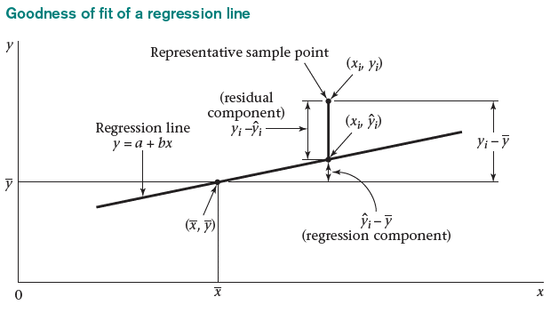

This page is part of the University of Colorado-Anschutz Medical Campus’ BIOS 6618 Recitation collection. To view other questions, you can view the BIOS 6618 Recitation collection page or use the search bar to look for keywords.
The ANOVA Table and \(F\)-test
The analysis of variance (ANOVA) can be used to evaluate the overall fit of a regression model and to determine if the residual sum of squares is significantly reduced relative to a model containing only an intercept (i.e., just using the group mean as our predicted value). This information is summarized in an ANOVA table:
Code
library(kableExtra)anova_df <-data.frame( 'Source'=c('Model','Error','Total'),'Sums of Squares'=c('SS~Model~','SS~Error~','SS~Total~'),'Degrees of Freedom'=c('p','n-p-1','n-1'),'Mean Square'=c('MS~Model~','MS~Error~',''),'F Value'=c('MS~Model~/MS~Error~','',''),'p-value'=c('Pr(F~p,n-p-1~ > F)','',''))kbl(anova_df, col.names=c('Source','Sums of Squares','Degrees of Freedom','Mean Square','F-value','p-value'),align='lccccc', escape=F) %>%kable_styling(bootstrap_options ="striped", full_width = F, position ="left")
Source
Sums of Squares
Degrees of Freedom
Mean Square
F-value
p-value
Model
SSModel
p
MSModel
MSModel/MSError
Pr(Fp,n-p-1 > F)
Error
SSError
n-p-1
MSError
Total
SSTotal
n-1
Note, in qmd files you may need to include special arugments for fig-cap and filters (see raw code).
Where \(MS_{Model}=\frac{SS_{Model}}{p}\) and \(MS_{Error}=\frac{SS_{Error}}{n-p-1}\).
It can be helpful to also visualize what each one of the terms in our ANOVA table correspond to:

Visualization of the three components (model, error, total).
Ultimately, the simplest regression estimate for \(Y_i\) is to just use the sample mean, \(\bar{Y}\) (an intercept-only model). The difference between the observed \(Y\)’s and the mean of the \(Y\)’s, \(Y_i-\bar{Y}\), is the \(\color{red}{\textbf{total error}}\). The total error can be broken down further as the sum of the \(\color{blue}{\textbf{regression component}}\) and the \(\color{green}{\textbf{residual component}}\): \[ {\color{red}{Y_i - \bar{Y}}} = {\color{blue}{(\hat{Y}_{i}-\bar{Y})}} + {\color{green}{(Y_i - \hat{Y}_{i})}} \]
In other words, these two components represent:
Regression component (model): The variability in \(Y\) due to the regression of \(Y\) on \(X\). The regression component is the difference between the predicted \(Y\) and the mean of the \(Y\)’s: \[ \hat{Y}_i-\bar{Y} \]
Residual component (error): The variability in \(Y\) “left-over” after the regression of \(Y\) on \(X\). The residual component is the difference between the observed \(Y\) and predicted \(Y\): \[ Y_i-{\hat{Y}}_i \]
\(F\)-Test for Simple Linear Regression
From our ANOVA table we saw that the model mean square is the regression (model) sum of squares divided by the number of predictor variables, \(p\), in the model (\(p=1\) for SLR). Theoretically, the expectation of our MSModel is \[ E(MS_{Model}) = \sigma^{2}_{Y|X} + \beta_{1}^{2} \sum_{i=1}^{n} (X_i - \bar{X})^2 \]
The residual mean square was the residual sum of squares divided by its degrees of freedom (\(n-2\) for SLR). Its expectation is \[ E(MS_{Error}) = E(s_{Y|X}^{2}) = \sigma^{2}_{Y|X} \]
It can be shown that the ratio of two variances follows an \(F\) distribution under the null hypothesis that the two variances are equal (\(\sigma_1^2 = \sigma_2^2\)): \[ \frac{s_{1}^{2} / \sigma_{1}^{2}}{s_{2}^{2} / \sigma_{2}^{2}} \sim F_{n_{1}-1,n_{2}-1} \]
In the context of regression, under the null hypothesis that the true slope of the regression line is zero (\(H_0: \beta_1=0\)), both MSModel and MSError are independent estimates of \(\sigma^{2}_{Y|X}\). Thus, the ratio of the regression mean square to the residual mean square will have an \(F\) distribution with \(p\) and \(n-p-1\) degrees of freedom: \[ F = \frac{MS_{Model}}{MS_{Error}} \sim F_{p,n-p-1} \]
The \(F\) test is used to test if the model including covariate(s) results in a significant reduction of the residual sum of squares compared to a model containing only an intercept.
If the null hypothesis is true, then the expected value of the \(F\) ratio should be 1. If the null hypothesis is false, then the expected value of the \(F\) ratio is greater than 1.
The t-test and the F-test are equivalent for testing \(H_0: \beta_1 = 0\) in simple linear regression:
If \(X \sim t_n\), then \(X^2 \sim F_{1,n}\).
Recall, \(t = \frac{\hat\beta_1}{\hat{SE}(\hat\beta_1)}\), where \(t \sim t_{n-p-1}\) under \(H_0\).
Source Code
---title: The ANOVA Table and the $F$-test in SLRauthor: name: Alex Kaizer roles: "Instructor" affiliation: University of Colorado-Anschutz Medical Campustoc: truetoc_float: truetoc-location: leftformat: html: code-fold: show code-overflow: wrap code-tools: true---```{r, echo=F, message=F, warning=F}library(kableExtra)library(dplyr)```This page is part of the University of Colorado-Anschutz Medical Campus' [BIOS 6618 Recitation](/recitation/index.qmd) collection. To view other questions, you can view the [BIOS 6618 Recitation](/recitation/index.qmd) collection page or use the search bar to look for keywords.# The ANOVA Table and $F$-testThe *analysis of variance* (ANOVA) can be used to evaluate the overall fit of a regression model and to determine if the residual sum of squares is significantly reduced relative to a model containing only an intercept (i.e., just using the group mean as our predicted value). This information is summarized in an **ANOVA table**:```{r, message=F, class.source = 'fold-hide'}#| code-fold: true#| fig-cap: "Note, in qmd files you may need to include special arugments for fig-cap and filters (see raw code)."#| filters:#| - parse-latexlibrary(kableExtra)anova_df <-data.frame( 'Source'=c('Model','Error','Total'),'Sums of Squares'=c('SS~Model~','SS~Error~','SS~Total~'),'Degrees of Freedom'=c('p','n-p-1','n-1'),'Mean Square'=c('MS~Model~','MS~Error~',''),'F Value'=c('MS~Model~/MS~Error~','',''),'p-value'=c('Pr(F~p,n-p-1~ > F)','',''))kbl(anova_df, col.names=c('Source','Sums of Squares','Degrees of Freedom','Mean Square','F-value','p-value'),align='lccccc', escape=F) %>%kable_styling(bootstrap_options ="striped", full_width = F, position ="left")```\normalsizeWhere $MS_{Model}=\frac{SS_{Model}}{p}$ and $MS_{Error}=\frac{SS_{Error}}{n-p-1}$.It can be helpful to also visualize what each one of the terms in our ANOVA table correspond to:Ultimately, the simplest regression estimate for $Y_i$ is to just use the sample mean, $\bar{Y}$ (an intercept-only model). The difference between the observed $Y$'s and the mean of the $Y$'s, $Y_i-\bar{Y}$, is the $\color{red}{\textbf{total error}}$. The total error can be broken down further as the sum of the $\color{blue}{\textbf{regression component}}$ and the $\color{green}{\textbf{residual component}}$:$$ {\color{red}{Y_i - \bar{Y}}} = {\color{blue}{(\hat{Y}_{i}-\bar{Y})}} + {\color{green}{(Y_i - \hat{Y}_{i})}} $$In other words, these two components represent:**Regression component (model):** The variability in $Y$ due to the regression of $Y$ on $X$. The regression component is the difference between the predicted $Y$ and the mean of the $Y$'s:$$ \hat{Y}_i-\bar{Y} $$**Residual component (error):** The variability in $Y$ "left-over" after the regression of $Y$ on $X$. The residual component is the difference between the observed $Y$ and predicted $Y$:$$ Y_i-{\hat{Y}}_i $$## $F$-Test for Simple Linear RegressionFrom our ANOVA table we saw that the **model mean square** is the regression (model) sum of squares divided by the number of predictor variables, $p$, in the model ($p=1$ for SLR). Theoretically, the expectation of our MS~Model~ is$$ E(MS_{Model}) = \sigma^{2}_{Y|X} + \beta_{1}^{2} \sum_{i=1}^{n} (X_i - \bar{X})^2 $$The **residual mean square** was the residual sum of squares divided by its degrees of freedom ($n-2$ for SLR). Its expectation is$$ E(MS_{Error}) = E(s_{Y|X}^{2}) = \sigma^{2}_{Y|X} $$It can be shown that the ratio of two variances follows an $F$ distribution under the null hypothesis that the two variances are equal ($\sigma_1^2 = \sigma_2^2$):$$ \frac{s_{1}^{2} / \sigma_{1}^{2}}{s_{2}^{2} / \sigma_{2}^{2}} \sim F_{n_{1}-1,n_{2}-1} $$In the context of regression, under the null hypothesis that the true slope of the regression line is zero ($H_0: \beta_1=0$), both MS~Model~ and MS~Error~ are independent estimates of $\sigma^{2}_{Y|X}$. Thus, the ratio of the regression mean square to the residual mean square will have an $F$ distribution with $p$ and $n-p-1$ degrees of freedom:$$ F = \frac{MS_{Model}}{MS_{Error}} \sim F_{p,n-p-1} $$ The $F$ test is used to test if the model including covariate(s) results in a significant reduction of the residual sum of squares compared to a model containing only an intercept.If the null hypothesis is true, then the expected value of the $F$ ratio should be 1. If the null hypothesis is false, then the expected value of the $F$ ratio is greater than 1.The t-test and the F-test are equivalent for testing $H_0: \beta_1 = 0$ in simple linear regression:* If $X \sim t_n$, then $X^2 \sim F_{1,n}$.* Recall, $t = \frac{\hat\beta_1}{\hat{SE}(\hat\beta_1)}$, where $t \sim t_{n-p-1}$ under $H_0$.